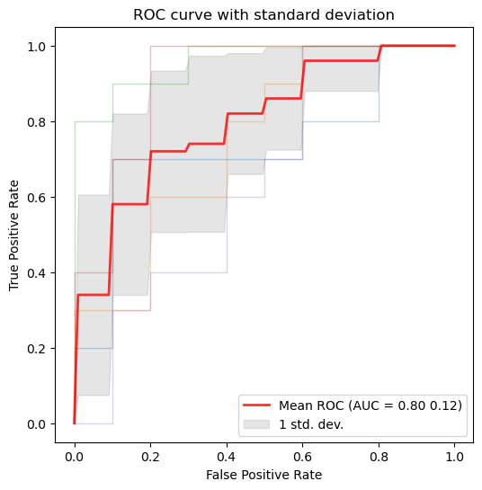

def plot_roc_curve_with_std(y_probs_folds, y_true_folds, fold_legend_info = False):
"""
Plot ROC curves with the standard deviation using the probabilities for each fold after applying crossvalidation.
Parameters:
y_probs_folds: List of arrays of the predicted probabilities (for the positive class) for each fold.
y_true_folds: List of arrays of the true labels for each fold.
"""
true_pos_rates = []
areas_under_curve = []
mean_false_pos_rate = np.linspace(0, 1, 100)
fig, ax = plt.subplots(figsize=(6, 6))
# Loop to get the ROC curve of each fold
for fold, (y_probs, y_true) in enumerate(zip(y_probs_folds, y_true_folds)):
# Calculate the ROC curve for the fold
calc_ROC = RocCurveDisplay.from_predictions(
y_true,
y_probs,
name=f"ROC fold {fold + 1}",
alpha=0.3,
lw=1,
ax=ax,
)
if fold_legend_info == False or fold_legend_info == None:
calc_ROC.line_.set_label('_nolegend_')
elif fold_legend_info == True:
pass
# Interpolate TPR
interp_tpr = np.interp(mean_false_pos_rate, calc_ROC.fpr, calc_ROC.tpr)
interp_tpr[0] = 0.0
true_pos_rates.append(interp_tpr)
areas_under_curve.append(calc_ROC.roc_auc)
# Compute mean and standard deviation of the AUC
mean_tpr = np.mean(true_pos_rates, axis=0)
mean_tpr[-1] = 1.0
mean_auc = auc(mean_false_pos_rate, mean_tpr)
std_auc = np.std(areas_under_curve)
# Plot the mean ROC curve
ax.plot(
mean_false_pos_rate,
mean_tpr,
color="r",
label=r"Mean ROC (AUC = %0.2f %0.2f)" % (mean_auc, std_auc),
lw=2,
alpha=0.8,
)
# Plot the standard deviation of the true positive rates
std_tpr = np.std(true_pos_rates, axis=0)
tprs_upper = np.minimum(mean_tpr + std_tpr, 1)
tprs_lower = np.maximum(mean_tpr - std_tpr, 0)
ax.fill_between(
mean_false_pos_rate,
tprs_lower,
tprs_upper,
color="grey",
alpha=0.2,
label=r"1 std. dev.",
)
# Add labels and legend
ax.set(
xlabel="False Positive Rate",
ylabel="True Positive Rate",
title=f"ROC curve with standard deviation",
)
ax.legend(loc="lower right")
plt.show()Metrics
Metric tracking and analysis tools
PSNRMetric
PSNRMetric (max_val, **kwargs)
RMSEMetric
RMSEMetric (**kwargs)
MAEMetric
MAEMetric (**kwargs)
MSEMetric
MSEMetric (**kwargs)
SSIMMetric
SSIMMetric (spatial_dims=3, **kwargs)
ROC Curve
Example: plot the ROC curve for the data after applying cross-validation and training in order to visualize the standard deviation to compare between splits.
# For this example the iris dataset is used, but in order to apply it succesfully for binary classification,
# the dataset is reduced to two classes and the features are increased by adding noise.
# Step 1: Data loading and preprocessing
iris = load_iris()
target_names = iris.target_names
X, y = iris.data, iris.target
X, y = X[y != 2], y[y != 2]
n_samples, n_features = X.shape
# Step 2: Adding noise to the data
random_state = np.random.RandomState(0)
X = np.concatenate([X, random_state.randn(n_samples, 300 * n_features)], axis=1)
# Step 3: Application of cross-validation
cv = StratifiedKFold(n_splits=5)
splits = list(cv.split(X, y))
# Step 4: Training of a SVM algorithm
y_probs_folds = []
y_true_folds = []
classifier = svm.SVC(kernel="linear", probability=True, random_state=random_state)
# Obtaining the probabilities and true labels for each fold
for train_idx, test_idx in splits:
# Train and predict
classifier.fit(X[train_idx], y[train_idx])
y_probs_folds.append(classifier.predict_proba(X[test_idx])[:, 1]) # Probabilities for the positive class
y_true_folds.append(y[test_idx]) # True labels for the fold
# Call the function to plot the ROC curve with the standard deviation
plot_roc_curve_with_std(y_probs_folds, y_true_folds, fold_legend_info = False)
Fourier Ring Correlation
Radial mask
radial_mask
radial_mask (r, cx=128, cy=128, sx=256, sy=256, delta=1)
Generate a radial mask.
Returns: - numpy.ndarray: Radial mask.
| Type | Default | Details | |
|---|---|---|---|
| r | Radius of the radial mask | ||
| cx | int | 128 | X coordinate mask center |
| cy | int | 128 | Y coordinate maske center |
| sx | int | 256 | Size of the x-axis |
| sy | int | 256 | Size of the y-axis |
| delta | int | 1 | Thickness adjustment for the circular mask |
get_radial_masks
get_radial_masks (width, height)
Generates a set of radial masks and corresponding to spatial frequencies.
Returns: tuple: A tuple containing: - numpy.ndarray: Array of radial masks. - numpy.ndarray: Array of spatial frequencies corresponding to the masks.
| Details | |
|---|---|
| width | Width of the image |
| height | Height of the image |
Fourier ring correlation
get_fourier_ring_correlations
get_fourier_ring_correlations (image1, image2)
Compute Fourier Ring Correlation (FRC) between two images.
Returns: tuple: A tuple containing: - torch.Tensor: Fourier Ring Correlation values. - torch.Tensor: Array of spatial frequencies.
| Details | |
|---|---|
| image1 | First input image |
| image2 | Second input image |
FRCMetric
FRCMetric (image1, image2)
Compute the area under the Fourier Ring Correlation (FRC) curve between two images.
Returns: - float: The area under the FRC curve.
| Details | |
|---|---|
| image1 | First input image |
| image2 | Second input image |